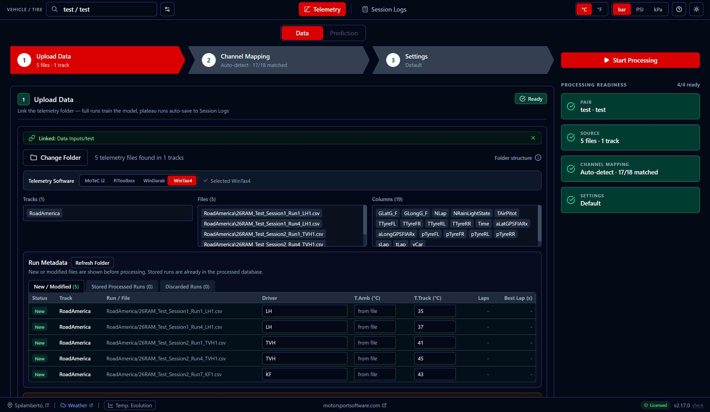
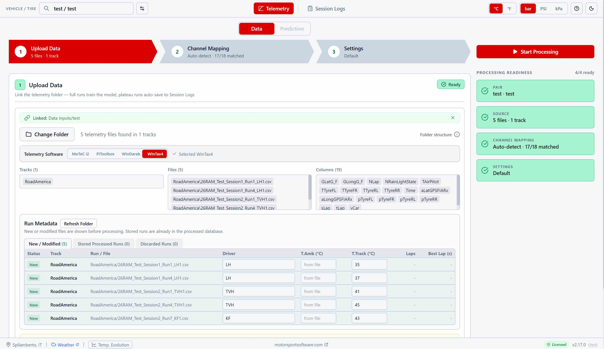
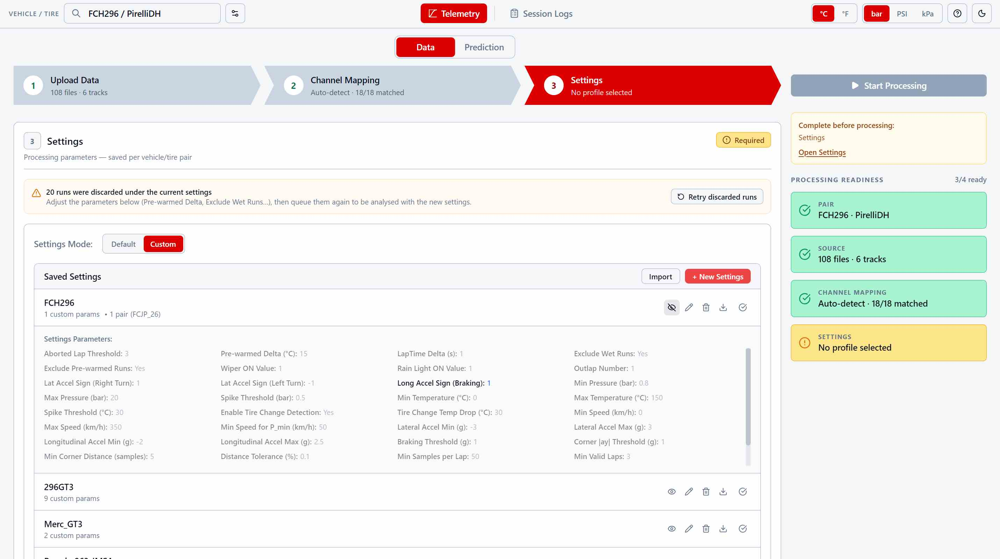
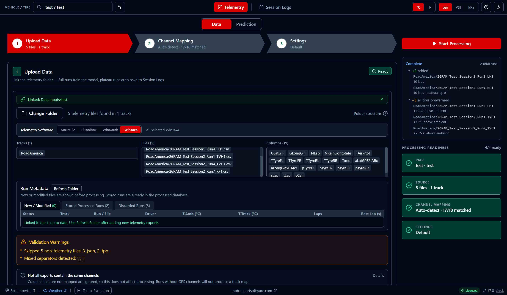
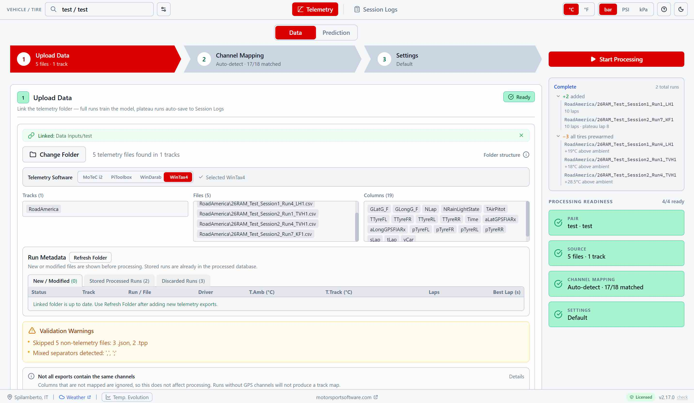

Features
The app has two halves. So does this page — pick one and scroll.
Telemetry
The same three steps you walk through in the app. Click one to see it.


Link the folder, not the files
Point the app at the folder your logger already exports to. It scans it, works out which software produced the files, and lists what is new since last time. Export whole runs, cold tires to hot — that build-up is what the model learns from.
WinTax4, WinDarab, MoTeC or PiToolbox, identified from the content of the files themselves. Reads .csv, .txt, .xls and .xlsx.
Each new run takes a driver and, if your export does not carry it, a track temperature. Everything else is read from the file.
Each vehicle/tire pair keeps its own data. Export it as a single .tpp file and it moves to another PC complete with settings, mappings and logs.


Your channel names, understood
Every team names its channels differently. The app matches yours to what it needs and shows you exactly what it found — before you waste a session on a missing one.
Eighteen out of eighteen on a standard export, each with the unit it is read in. Anything missing is flagged in red.
Switch to Custom to pick a channel yourself, or to declare a different unit — psi instead of bar, °F instead of °C.
The mapping is stored with the pair and applied at every processing, so you set it up once per car.


Nothing is discarded silently
Set what counts as a valid lap, and the app tells you what is still missing before it will start. Then every run is either stored or set aside with the reason written next to it — and a run set aside is never lost.
Save a set of processing parameters as a profile and hand it to every car that needs it. Import it, export it, share it with the rest of the team.
Wet, pre-warmed, too few valid laps — the reason is always there. Loosen the threshold that caused it and queue them again, or delete them for good.
Wet sessions, out-laps, pit bleeds and sensor spikes are filtered out before training, so the model only ever learns from representative laps.


Press Start, and read the receipt
The app works through the folder run by run, then tells you what it kept and what it left out — and, for anything left out, by how much it missed.
Added, with laps and the lap the pressures settled on. Or excluded, with the number that caused it — tires 19 °C above ambient, not just "pre-warmed".
Non-telemetry files it ignored, mixed separators, exports that carry different channels: warnings you can act on, not silent assumptions.
Runs already in the database are skipped. Come back after a test day and only the new sessions are processed, in seconds rather than minutes.
Cold Pressure Prediction
Pressures climb for the whole run, and your fastest lap does not wait for them to settle. Tell the app which lap you are aiming at, and it works backwards to the cold pressures that put you on target exactly there.
Being on target at lap 4 and being on target at lap 20 need different cold pressures. Set the lap you actually race for and the prediction is built for that point of the build-up, not for a stabilized state you may never reach.
The curve shows each corner climbing towards your hot target lap after lap, against the target line — so you can see whether you arrive early, late or right on it.
Filter by driver, ambient temperature and lap time. What you keep is what feeds the prediction — match race-day conditions instead of averaging a whole season.
Colder or hotter than when you trained? The prediction is adjusted for air, for track surface, and for tires inflated in a warm garage. Every corner carries the range to expect, in bar, PSI or kPa.


Know Which Lap to Aim At
Your fastest lap is not random: across a season it keeps landing on the same lap of the run. This panel tells you which one — and that number is what you feed back into the prediction.
Across the selected runs it lands between laps 3 and 5 four times out of five, peaking at lap 4. Enter that lap, and the cold pressures are built to be on target when you are on it.
Pressure and temperature per corner at the fastest lap of your selection: the reference every setup ends up being judged against.
Where each wheel actually sat across the selected runs, by pressure or by temperature. A wide spread on one corner is telling you something.
Green when a run is long enough for the lap you asked for, amber when it is not — so you never extrapolate without knowing that you are.
Session Logs & Tire Pressure Logs
For cars without TPMS, or whenever you measure at the car by hand. Type the cold and hot pressures you read, get the recommendation from the same gas-law maths.
Cold, hot, tire, air and track temperature per run, with driver, event and session. Filter it, reorder it, export it for the tire engineer.
Enter the hot pressures you are targeting and the conditions you expect, read the cold values — each with the change from the set you ran last.
Runs whose pressures stabilised in the telemetry land here on their own, as verified references you did not have to measure.


FAQ
What data do I need?
Can I use it without TPMS?
What “lap number” should I enter?
What if conditions are different from when I trained the model?
How accurate are the predictions?
How do I get started?
More questions? Email us
Download the App
Fill in the form and start using Tire Pressure Predictor
Or email directly: support@motorsportsoftware.com
Looking for more motorsport tools? Visit motorsportsoftware.com